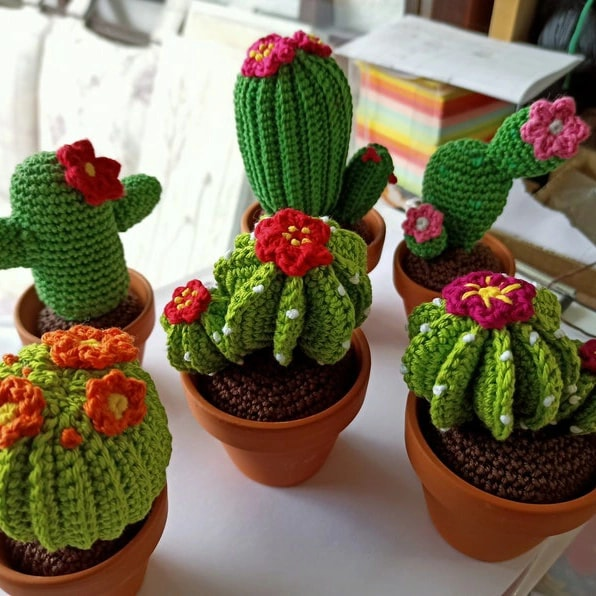
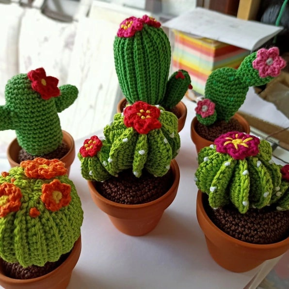
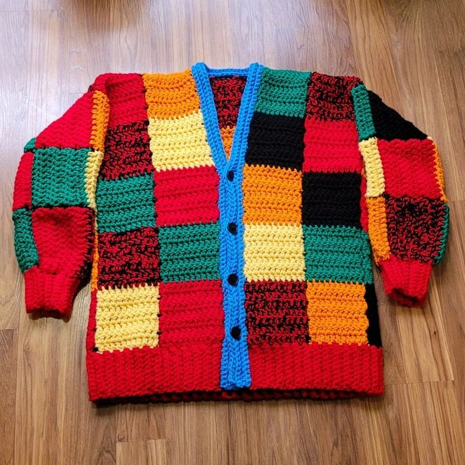

Crochet Gletxer Galindo es un emprendimiento que nació por mi gusto hacia las manualidades. Disfruto hacerlo, siento amor por el tejido y lo que más me motivó fue hacerle prenditas tejidas a mi primera hija. Es lindo ganarse la vida haciendo lo que amo.
 

